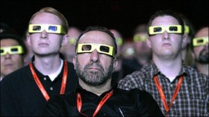

Все появляющиеся сейчас в продаже так называемые 3D телевизоры обман и деньгосос.

Единственная логичная роль такой покупке — позвонить друзьям и сказать: «А я типо купил этот. Телевизор 3D. Приходи смотреть». Друзья придут и посмотрят на телевизор и по очереди померят очки. На этом все. Еще вы посмотрите два раз диск, который шел с телевизором и, возможно, купите еще один. Остальное время телевизор будет использоваться как самый обычный телевизор.
Покупать такой телевизор из-за 3D — глупость и жлобство.